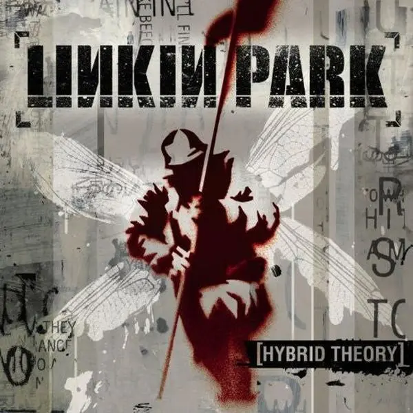

O Linkin Park é uma das bandas de rock mais influentes e inovadoras do
século XXI. Formada em 1996 em Agoura Hills, na Califórnia, a banda
explodiu na virada do milênio redefinindo a música pesada e se
tornando o principal rosto do movimento nu metal. Hoje, eles continuam
a escrever sua história abraçando um novo capítulo.
O Som e a Identidade
A marca registrada da banda sempre foi a fusão de gêneros que pareciam
opostos: guitarras do metal, batidas eletrônicas, scratches de DJ e
hip-hop. O coração dessa dinâmica era o contraste emocional entre a
voz visceral e rasgada de
Chester Bennington e as rimas precisas de
Mike Shinoda. Na nova era da banda, a
vocalista
Emily Armstrong
traz uma energia renovada que respeita esse legado, mantendo a
intensidade característica que os fãs amam.
A Formação Atual
Após um longo hiato, a banda retornou aos palcos com uma nova
formação. Ao lado dos membros clássicos
Mike Shinoda (vocal e multi-instrumentista),
Brad Delson (guitarra),
Dave "Phoenix" Farrell (baixo) e
Joe Hahn (DJ), o Linkin Park agora conta com
Emily Armstrong assumindo os vocais e
Colin Brittain na bateria.
Principais Álbuns

Hybrid Theory
Meteora
From Zero
O legado e Discografia:
O Estouro (2000): O álbum de estreia,
Hybrid Theory, foi um fenômeno global e continua sendo um dos discos
de estreia mais vendidos de toda a história da música.
A Consolidação (2003): O segundo álbum,
Meteora, provou que eles vieram para ficar, trazendo hits absolutos
como "Numb", "Faint" e "Somewhere I Belong".
O Legado de Chester (2017): A trágica
perda do vocalista Chester Bennington paralisou a banda por anos.
Seu impacto na música e as letras abertas sobre saúde mental e
angústia continuam influenciando gerações.
O Retorno (2024): Com o álbum From Zero, a
banda celebra suas raízes (fazendo referência ao primeiro nome do
grupo, Xero) e mostra que está pronta para o futuro com a nova
formação.